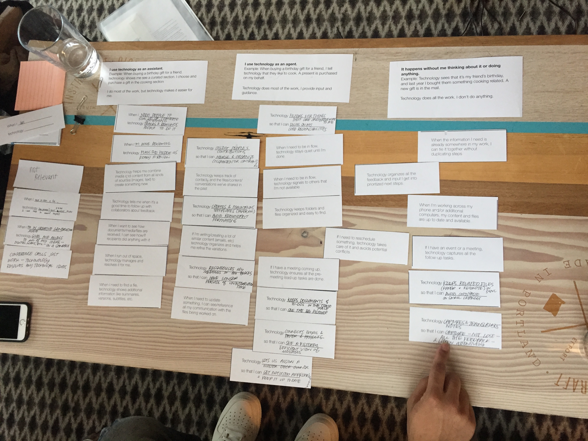
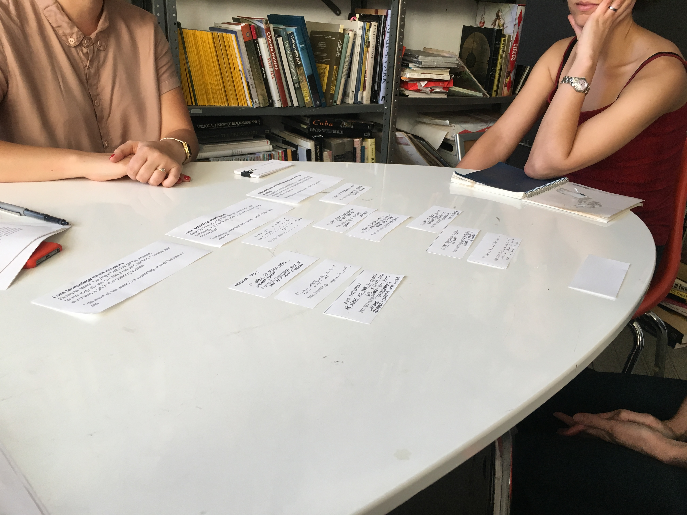
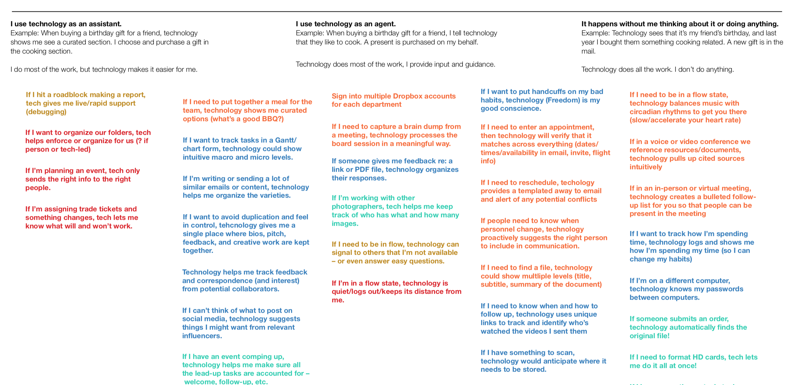

Smart Technology Research
In late 2017, I led a project with two other researchers investigating opportunities for smart technology. For the sake of confidentiality, I won’t reveal specific objectives or contexts. We used an combined approach of longitudinal data gathering and co-creative research.

Goals
- Understand people’s attitudes, emotions, and current behavior regarding smart technology
- Identify tasks and moments in people’s worklives they really enjoyed – these are the moments technology should work to augment
- Identify tasks and moments in the workday people didn’t enjoy as much, where technology should take on the burden to automate much of the work
Approach
Rather than take a technology-first approach, we instead wanted to catalogue tasks and activities that technology of any kind should help augment or automate, and then assess internally which opportunities good candidates for specific implementations. It was also important to us to use a co-creative mindset: Participants should have a great experience during the study, and feel that they were benefitting as well.
We used a combination of longitudinal diary studies and co-creative research methodology:
Stakeholder Interviews & Lit Review
As we scoped the project, we conducted preliminary research from existing articles, both in mainstream publications as well as academic. We also met with over a dozen stakeholders conducting anonymous interviews on where they thought the industry was going, and where our company should go. These inputs were critical to make sure that our findings were relevant to Dropbox as well as resonant with the people who relied on them most.Diary Study
We worked with 40 people in our target market to chronicle the tasks and activities they enjoy and don’t enjoy at work over 5 business days via a mobile application. Participants photographed several moments in their day by photographing them with their phones, and indicated whether it was an enjoyable (or not) activity; and why. We received over 1000 entries, and more than 600 photos. We used this approach since many tasks, we hypothesized, are hard to track retrospectively, and are more accurately captured in the moment.Self-Identify Opportunities: In-Person Interviews
We did follow-up interviews with 12 people across Portland and New York to better understand the relationship people want to have with “smart” and “sophisticated” technology, and what opportunities we might have to help people work the way they want. We worked with them to identify opportunities based on their diary study entries – how might technology help them work the way they want to? What would the impact be? and then sorted subsequent opportunities into a framework developed by Christopher Noessel called agentive technology.
With participants, we generated moments where a fictive technology (where anything was possible) might help them offload work, or be used to augment or enhance the moments they enjoyed. We wrote these on cards collaboratively, and then sorted them across a spectrum with three points marked to describe how they wanted technology to intervene in particular circumstances:
- Assistive technology: I do most of the work, technology helps out
- Agentive technology: I provide input, technology does most of the work
- Automatic technology: I don’t have to do anything, technology just gets it done
Analysis & Coding
Through both phases of fieldwork, we tracked themes across three cohorts. We also had the additional data set of concrete opportunities that people wanted to improve or increase the time they spent on, including the kind of relationship they wanted to have with technology. We were able to code more than 120+ cards that participants co-created with us on that spectrum, and see trends where people preferred specific tasks to be fully automated, assistive, or agentive.
Socialization of Findings & Recommendations
We met again with our stakeholders with a first cut of our findings and recommendations. We used their input to refine our narrative, and created findings documentation via Dropbox Paper to share with the company; as well as several presentations tailored to product teams.
Across all phases, it was important to us that participants also walked away learning something or benefitting beyond an incentive. We built goals into the study to honor people’s contributions, and stated goals for participant experience in several touchpoints like screening calls and the diary study.
Findings & Outcomes
I can’t list specific findings. We collected a large volume amount of data, and we wanted to present it to our stakeholders based on what the organization should do about the opportunities; and in what order. So, we designed our findings to include each of the following three attributes:
- Concrete examples of workflows and features that were good opportunities
- Principles and preferences reflected by participants for how smart technology should intervene
- Priorities and impact of potential smart technology innovations described by participants
In addition to publishing an accessible, recommendation-oriented findings document, as well as making curated selections of our raw data available, we also toured several team meetings and had a “sneak peek” for our stakeholders.
Retrospective
I have many ideas for things I’d like to add or include to similar studies in the future. One of the things that made this study successful was that when we generated opportunities with particpants, they were working with a record of their activities so they could point out real examples or help us fill in the gaps if we missed any parts of their typical workweek. However, we could have built on this and one possible extension of this work would be to do a workshop with both participants and Dropbox workers where we used the opportunities to co-design concepts. A future technology workshop would be ideal for this, and would be a way to both cement the insights in stakeholders as well as move further into design phase.
Another strength was that we used a diary study tool in a mobile app, which participants both loved and loathed depending on the functionality. This strength became a weakness in some cases.
Three things I’d do quite differently:
- Increase impact by workshopping with stakeholders and/or participants to move from opportunities to concepts as quickly as possible.
- Use concepts created in workshops as one of the more powerful modes to communicate findings and opportunities.
- Use a tool that we’re confident won’t introduce confusion or irritation to participants’ lives. We piloted it internally, but had not used it externally.
Three things I’d do again:
- Build co-creative components into the study that set explicit goals for particpant experiences, and communicate them clearly.
- Prime conversations about smaller moments – like coordination tax – using similar longitudinal methods, even if only for a day.
- Sneak peek meetings, stakeholder interviews, and meeting tours were really effective to get a broad swath of colleagues aware and talking about the work.